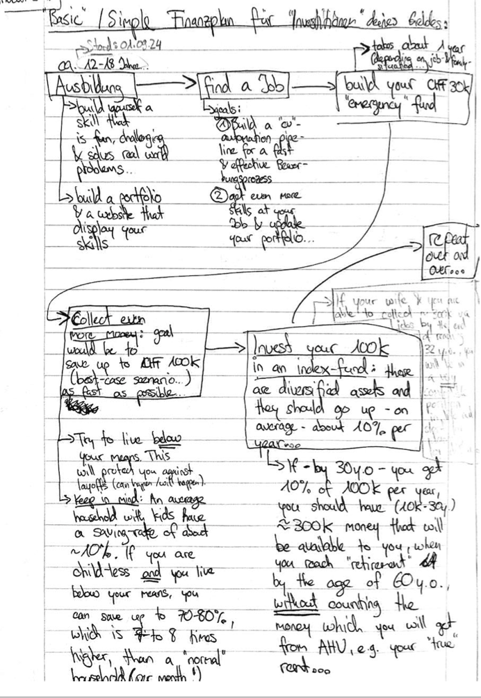

Chapter 10 Investments
Hier geht es um das Tabu-Thema der Gesellschaft: Geld und - insbesondere auch - dessen Verwaltung.
Geld ist ein Freieheisinstrument: wenn du weisst, wie du mit deinem Geld vernünftig umgehen sollst, wirst du dir Zeit zurückkaufen, die du sonst in Arbeit (selbständig oder unselbständig) stecken musst, um zu überleben.
10.1 Haushalt- & Budgetsplanung
Bevor du mit “Investments” beginnst, musst du wissen, was du überhaupt an Geld ein- & ausgibst.
10.2 Herleitung deiner Investment-Strategie
Nachdem du weisst, wie Geld jeweils verwendet wird und wann dieses aus deinem Portemonnaie herausfliesst, gilt es nun, eine (simple!) Investment-Strategie herzuleiten.
10.2.1 Wo soll ich beginnen? | Reihenfolge
Hier die Übersicht, wie du dein Leben mit einer (simplen) “Investment-Strategie” in Einklang bringen kannst:

Simpler Finanzplan für die Investition deines Geldes
10.2.2 Grobe Faustregeln, die es immer zu respektieren gilt?
- Investieren niemals dein ganzes Vermögen in rein spekulative Anlagen (z.B. “Bitcoin” in den 2020er Jahren).
- Versuche immer, deine Investments zu diversifizieren, also z.B. 60% deines Investment-Vermögens in Rohstoffe, 30% in Aktien und 10% in Bonds. Es gibt einen Grund, weshalb die Diversifikations-Theorie (Markowitz) den Wirtschafts-Nobelpreis erhalten hat.
10.2.3 Deine Investment-Ziele
Bevor du mit der Investement-Strategie beginnst, beantworte folgende Leitfragen:
- Gegeben deiner aktuellen Lebenssituation (insb. Alter, Familienstand & Arbeitssituation): was ist der Anteil an “Cash”, der du bereit bist, in dein Investment-Portfolio zu stecken?
- Wie viel Geld soll dein Portfolio umfassen, bis du “zufrieden” bist und - theoretisch - niemals mehr in der Lage wärst, zu investieren (damit du dich auch um die wirklich wichtigen Dinge im Leben kümmern kannst, wie z.B. Kinder erziehen & Familie, Hobbies & Gesundheit)?
10.2.4 Methodik
Am besten geht das, wenn du jeweils 1x jährlich deine Finanzen vom vergangenen Jahr Revue passierst.
Hier das Video (lokaler Pfad):
./Documents/Life/03 Investment/1-Haushaltsplanung/1-yearly-budget-simulation/How to Monitor your Yearly Costs of Living & derive a meaningful and adequate Investment-Strategy?.mov
10.2.4.1 Du investierst zum ersten Mal in die Aktienmärkte?
Dann solltest du überlegen - via deinem Bauchgefühl & das Verfolgen der Tagesschau - ob die generelle Marktstimmung aktuell eher “gut” oder “schlecht” ist.
Hier die Faustregel, an der du dich orientieren kannst, nachdem du deine “gut / schlecht” Einschätzung gemacht hast:
- Falls “gute Marktstimmung” herrscht: Finde einen Index, in dem du dein Geld investierst (z.B. der S&P500).
- Falls “schlechte Marktstimmung” herrscht: Investiere lieber in Anlagen, die eine Reputation haben, “Krisenresistent” zu sein.
10.3 Trends & Markt-Prognosen | Die Aussenperspektive des Marktes
Nun, da du das einmalige Set-Up durchgegangen bist, kannst du nun beginnen, dich mit allgemeinen Marktprognosen zu beschöftigen. Sie geben dir Indikatoren, wo aktuell die Aufmerksam der Finanzmärkte liegen und erlauben dir - relativ dazu - deine eigene Meinung zu bilden und dich auf dem Märkten zu platzieren.
10.3.1 AI & Künstliche Intelligenz Trend
In diesem Artikel von Cyril Jubert (Februar 2026) werden sehr viele “meta-level” Aspekte der Software-Entwicklung und den Einfluss von AI darauf, sowie auf das “Software-as-a-Service” (SaaS) Business-Modell und die Finanzmärkte.
Hier die interessantesten Passagen:
- „Dans un monde où un agent IA traite les données, génère les exports et prépare les audits, l’entreprise peut n’avoir besoin que d’un nombre limité de licences pour validation et supervision finale.
- Beurteilung von mir (= Effekt von AI auf Software-Lifecycle): 100% d‘accord. Je suis mes profs de l‘uni sur Twitter et ils disent la même chose: si la „génération“ de code devient „gratuit“ à cause de la technologie „chatGPT“, alors la „valeur“ ajoutée des cocos qui produisent le code va aller dans la „validation & supervision“. Et ici, le monde aura toujours encore besoin d‘experts, car - comment l‘exemple que je t‘ai montré avec les images de maintenance de rous de trains - il faudra alors détecter l’anomalie dans le code générer automatiquement par les robots (grace à un expert).
- “Si une IA peut recréer 70 à 80 % de ces fonctionnalités en interne, à moindre coût et avec une personnalisation plus fine, la pression concurrentielle devient immédiate. La barrière d’entrée logicielle s’effondre.“
- Beurteilung von mir (= Unlösbarer Wartbarkeitsaspekt im AI-Regime wegen IT-Infrastruktur & Software-Umgebungen): je suis d‘accord aussi, mais avec la nuance suivante: il faut toujours encore - dans une seconde phase (plus long terme) - un coco qui arrive à faire marcher le système informatique crée par l‘IA. Le coco doit aussi comprendre le système entier générer par l‘IA, car sinon, comment peut il faire marcher son entreprise sans bugs informatique? —> tu peux penser à toi et nos pages html: il y a pleins de petits „truques“, qu‘il faut savoir pour faire marcher notre site. Ici, l‘IA peut bien sûr t‘aider, mais cela implique souvent aussi qu‘un „expert“ donne les bonnes instructions à l‘IA pour qu‘elle puisse faire son travaille correctement. Mais je suis néanmoins d‘accord que l‘IA est un accélérateur formidable de l‘innovation. Pour des mecs perfectionnistes comme nous, elle peut nous ouvrir pleins de possibilité qui aurait été beaucoup trop couteuse à entreprendre, si on avait pas d‘IA. C‘est là que je pense que beaucoup de gens „non-initier“ & managers on pas encore compris la chose: il pense pouvoir éliminer complètement les humains des processus de création, mais c‘est l‘inverse qui est vraie: la synnergie „robot“ + mecs perfectioniste ouvrira un monde avec des produits / innovations crées par des équipes „d‘experts“ beaucoup plus petits.
- “Cette première commoditisation que nous avons décrite ne menace donc pas seulement les modèles d’affaires des éditeurs. Elle remet en question l’architecture financière qui s’est construite autour de la stabilité supposée du SaaS.
C’est là que l’enjeu devient systémique. Lorsque la technologie modifie la visibilité des flux futurs, elle modifie aussi la perception du risque de crédit. Et lorsque le crédit se reprice, ce n’est plus un simple ajustement sectoriel, mais un changement de régime.“ - Meine Beurteilung (AI-Effekt auf Finanzsystem insbesondere im SaaS-Bereich): voilà un point auquel je n‘avais j‘avais encore pensé, mais que je trouve très intéressant. Est-ce que la crise mondial peut venir des changements systèmiques de la productions de logiciel informatique? Si beaucoup d‘entreprise „tech“ sont financer à des leviers de detes élever, nous avons trouver le candidat & cause de la prochaine crise financière. - „Parallèlement, plusieurs acteurs chinois — tels que DeepSeek ou MiniMax — ont accéléré la convergence en s’appuyant sur des techniques de distillation et d’itération rapide. La logique est simple : observer le comportement des modèles frontier, entraîner des modèles plus compacts capables d’en reproduire une large partie des performances, puis les distribuer à coût marginal faible. La barrière à l’entrée ne disparaît pas, mais elle se réduit. [….] Nous entrons alors dans un monde hybride : l’IA locale traite les flux internes, les audits, les documents sensibles ; seuls les cas complexes, multimodaux ou nécessitant une puissance exceptionnelle remontent vers le cloud. La dépendance aux API centralisées diminue. Le pricing power des fournisseurs frontier se fragilise. […] Et c’est ici que la seconde commoditisation devient stratégique. Si la majorité des usages quotidiens bascule vers des modèles open-source ou localisés, la rente ne se situe plus dans la simple exécution du modèle. Elle se déplace vers l’orchestration, la donnée propriétaire et l’infrastructure.“ - Meine Beurteilung (= AI-Regime beschleunigt vor allem den digitalen Innovationsprozess, dh Software von 0->1 & die Bedeutung von lokalen Open-Source Modellen): là aussi, je suis d‘accord à 100%. Les gagnats des grands changements seront les entreprises qui arriveront à implémenter ces programmes open source dans tous leurs processus de créations (qui seront accélérer à cause de l‘automatisation dûe à l‘IA). C‘est là ou on pourra voir l‘aparition d‘entreprise très petites tailles avec des gens qui deviendrons milliardaires.
Die obige Analyse & Schlussfolgerungen wurden auch - 3 Monate später (Mai 2026) - bekräftigt: es gibt Forscher, die gezeigt haben, dass ‘local LLMs are capable of matching 80% of the outputs of the “State-of-the-art” models like Opus or ChatGPT. The biggest advantage is that these local models run on one 2000$ Macbook, where you are not limited by Tokens or API Rate-Limits. Furthermore, these models are “datenschutz” friendly, because you send no code, API-keys or other safety-sensitive stuff to the cloud of a big-data company’.
- Quelle & Methodology can be found in the video of Awesome Coding (2026): https://youtu.be/caJUD2c3QRQ?is=Yvm_YS3jC3RK2vs9
10.4 Investing mit Warren Buffet
Der Amerikaner Warren Buffet ist DER grösste Investor der letzten 100 Jahre und war in der Mitte der 2000er Jahre der reichste Mann der Welt. Sein Reichtum kam aus seinen konsistenten Investments via seiner Firma Berkshire Hathaway.
- Wenn du auf der Suche nach neuen Investment bist, kannst du die folgende Datenbank verwenden, um deine Investments zu planen: https://faq.library.upenn.edu/business/faq/45586
In der obigen Datenbank gibt es bis zu 20’000 Einträge zu Firmen. Warren hat ist diese Datenbank mehrfach in seinem Leben - Linie für Linie - durchgegangen, um Firmen zu identifizieren, die hohes Investment-Potential hatten und - aus seiner Sicht - unterbewertet waren. Studiere die Datenbank und dein Return sollte positiv ausfallen.